Explore Palermo
A Brief History
Palermo served as capital of Norman Sicily after Arab engineers and Byzantine mosaicists helped Roger II build palaces and churches that blended Latin, Greek, and Islamic traditions in the twelfth century. Spanish viceroys later fortified harbours and baroque churches above Phoenician and Roman street grids. Twentieth-century migration, Allied invasion in 1943, and anti-mafia campaigns reshaped the city while markets, oratories, and Quattro Canti intersections still organise life on the Tyrrhenian coast.
Attractions Map
Top Sights & Activities
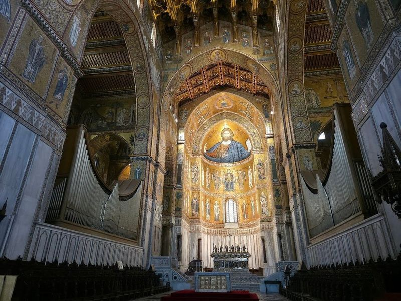
Cattedrale di Monreale
The Cattedrale di Monreale is a landmark that showcases the rich tapestry of architectural styles, blending Arab, Norman, Byzantine, and more. Constructed in 1184, this cathedral has preserved its original structure while evolving through centuries of modifications. travellers are captivated by its ornate cloisters and the gold mosaics that narrate biblical tales across its walls.
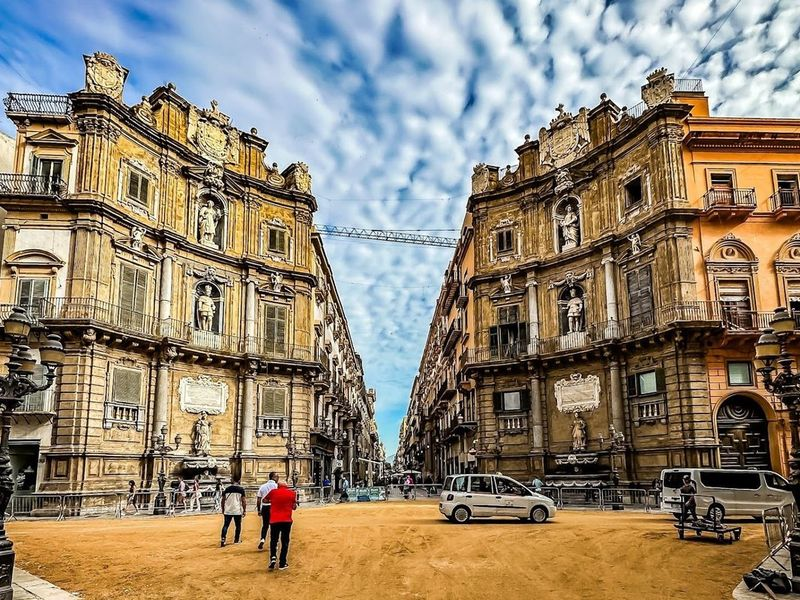
Quattro Canti
Quattro Canti, also known as Piazza Quattro Canti, is a octagonal public plaza in Palermo. It features four fountains topped by ornate statues in niches, representing the four seasons, Spanish kings, and the city's patron saints. This baroque masterpiece serves as the intersection of Via Maqueda and Corso Vittorio Emanuele and is a attraction in the city.
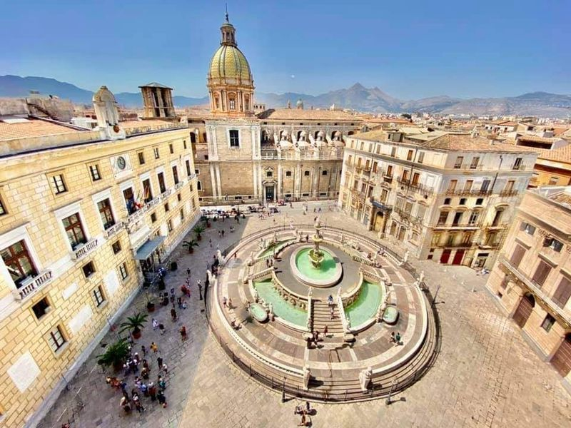
Fontana Pretoria
Praetorian Fountain, a 16th-century landmark located in Piazza Pretoria, Palermo, is renowned for its intricate tiered design and sculptures of nude mythological figures. Originally designed for a Tuscan villa, it was later moved to its current location in 1573. Crafted by Florentine sculptor Francesco Camilliani, the fountain features numerous striking statues including nude nymphs and mythical creatures alongside the Twelve Olympians.
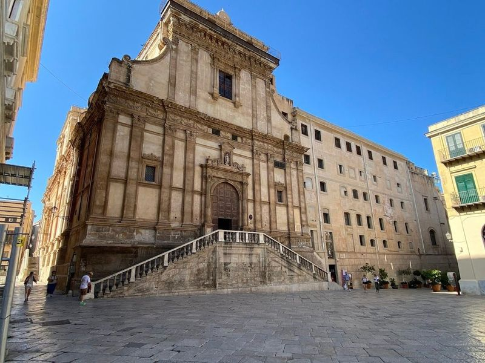
Chiesa e Monastero di Santa Caterina d'Alessandria
in the heart of Palermo, the Chiesa di Santa Caterina d'Alessandria stands as a testament to the city's rich history and artistic heritage. This grand Catholic church boasts an ornate facade that greets travellers at Piazza Bellini, while its lateral side offers views of the impressive Fontana Pretoria. The church's design showcases a blend of Renaissance, Baroque, and late-Baroque (Rococo) elements, reflecting centuries of architectural evolution.
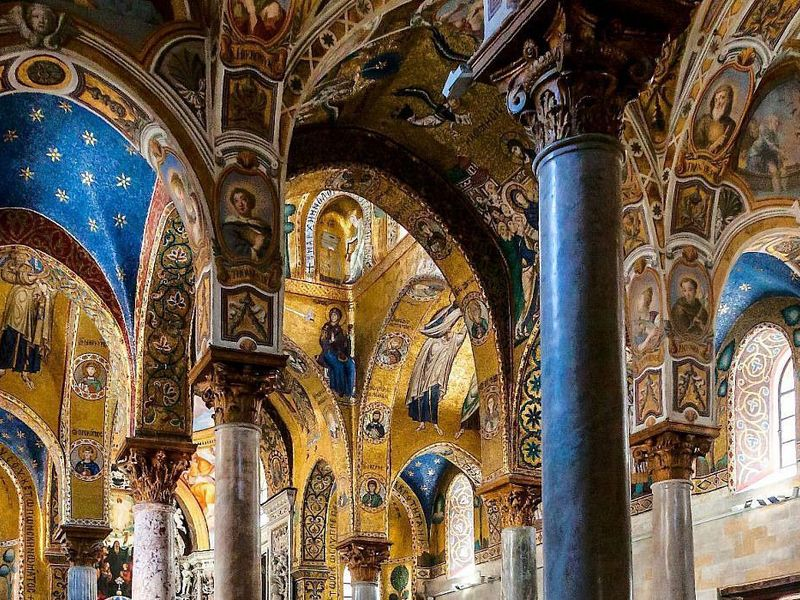
Church of Saint Mary 'dell'Ammiraglio'
Chiesa Santa Maria dell'Ammiraglio, also known as Chiesa della Martorana, is a domed church in Palermo's historic center. Originally built in the 12th century with Byzantine mosaics, it was later partially remodeled in the Baroque style. The church is famous for its landmark Byzantine mosaics and unique Arab-Norman architectural style, featuring intricate golden finishes.
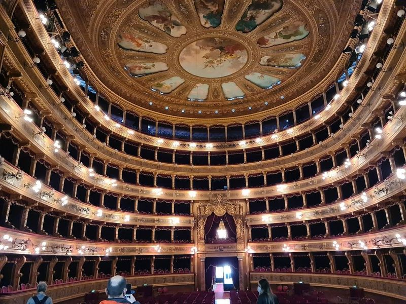
Teatro Massimo di Palermo
Teatro Massimo, located in Palermo, Italy, is a grand auditorium built in 1897 and still holds the title of Italy's largest theater with a seating capacity of 1,387. The building is an impressive and elegant architectural gem, featuring a pediment inscribed with the phrase "The Art renews the people and reveals its life." It was designed by architect Giovan Battista Filippo Basile and completed by his son.
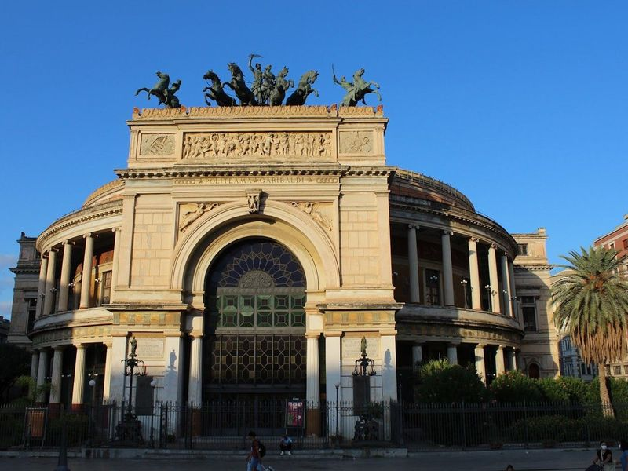
Teatro Politeama Garibaldi
Teatro Politeama Garibaldi is a grand neoclassical theater located in Piazza Ruggero Settimo, also known as Piazza Politeama. Designed by architect Giuseppe Damiani Almeyda, the theater's facade is adorned with a striking colonnade and features a rooftop embellished with seven bronze rearing horses.
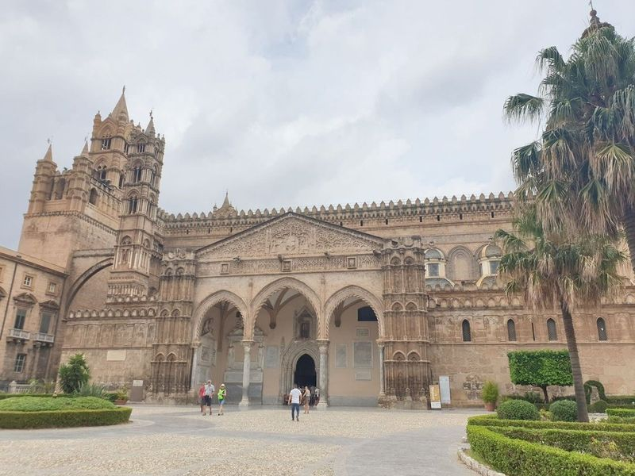
Palermo Cathedral
Palermo Cathedral, a church dating back to the 1100s, is an architectural marvel with four bell towers and royal tombs. The Ballaro market, reminiscent of the souk from the Arab domination era, offers a atmosphere with merchants' chants and authentic street food aromas. travellers can explore Quattro Canti and Fontana Pretoria before entering Palermo Cathedral to admire its grandeur and Byzantine mosaics.
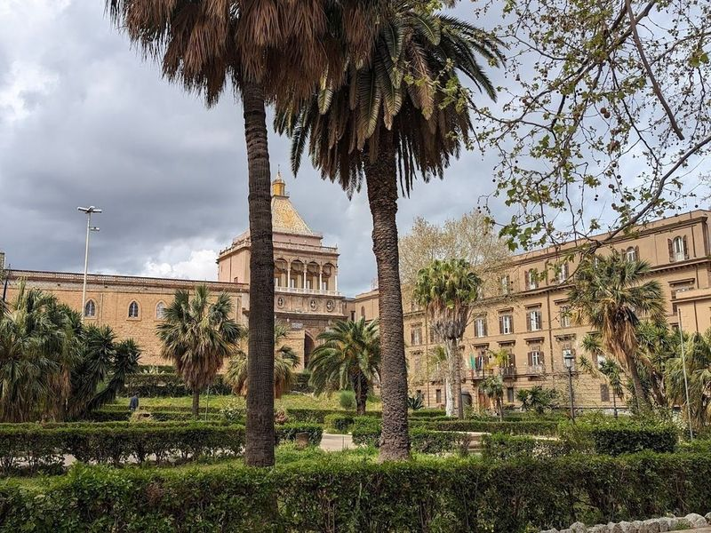
Villa Bonanno
right next to the Cathedral of Palermo, Villa Bonanno is a delightful garden that offers a serene escape from the bustling city. This green space features lush palm trees and a picturesque fountain where might even spot some turtles swimming about. It's an public space for relaxation, whether 're enjoying a good book or simply soaking in the atmosphere under the shade.
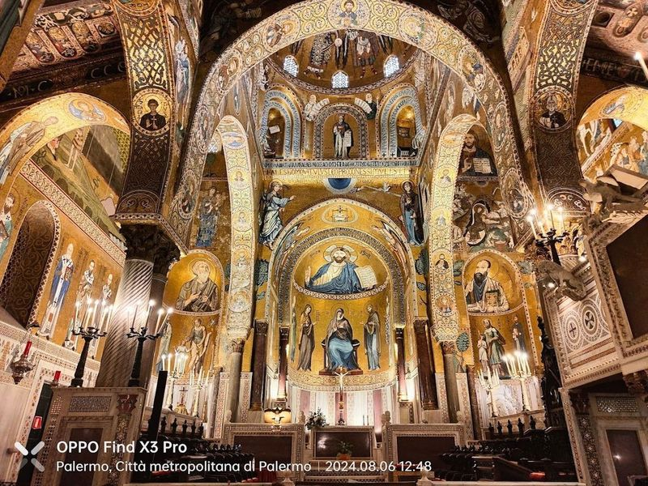
Palazzo dei Normanni
The Norman Palace, also known as the Palazzo dei Normanni, is a grand 9th-century palace in Palermo, Sicily. Originally built for the Emir of Palermo, it was transformed by the Normans and now houses Sicily's regional parliament. The palace features a neo-classical facade, a historic chapel with Byzantine mosaics called Cappella Palatina, and ornate royal apartments.
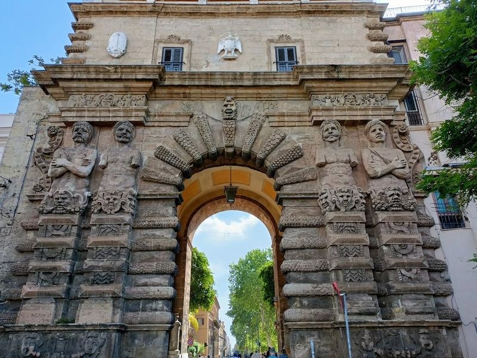
Porta Nuova
Porta Nuova is a historic triumphal arch and gateway in Palermo, standing at 43 meters high with Moorish statues. It marks the beginning of an ancient street that runs straight for nearly two miles from the sea to Porta Felice, encompassing many of Palermo's main attractions. The gate was erected in the late 16th century after Charles V's victory over the Turkish armies and serves as an entrance to the historical part of Sicily's capital.
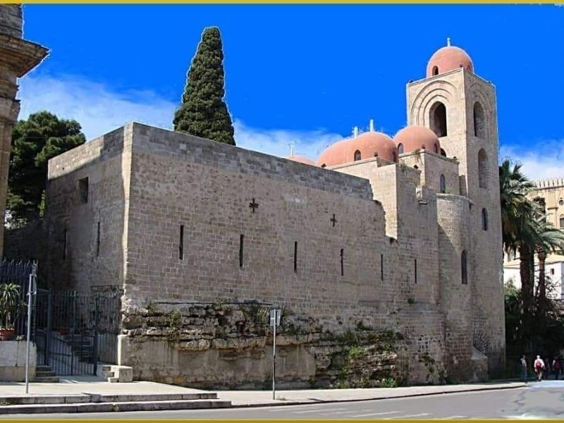
Church of Saint John of the Hermits
in the heart of Palermo, the Church of Saint John of the Hermits, or San Giovanni degli Eremiti, is a captivating medieval structure that dates back to the sixth century. This deconsecrated church showcases a unique blend of Arab-Norman architecture with late Roman influences. Its striking red domes are particularly eye-catching and add vibrancy to its otherwise simple facade.
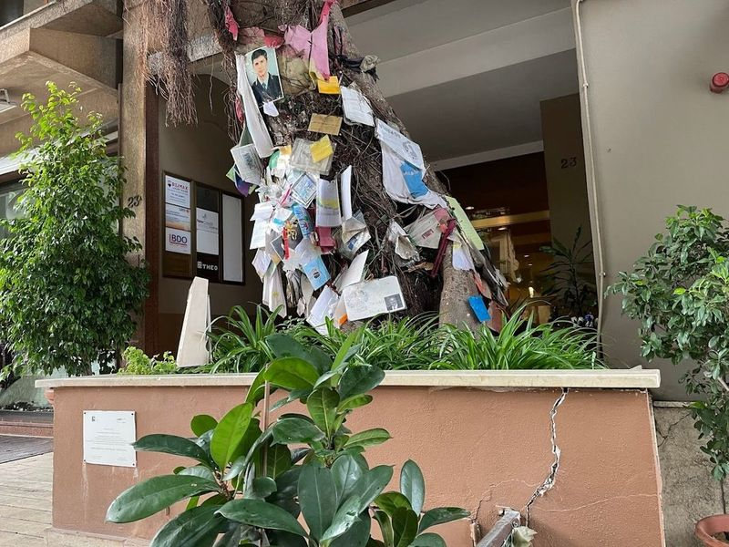
Albero Falcone
in the heart of Palermo, the Palazzo Comitini stands as a testament to Baroque architecture, captivating travellers with its grandeur. Located along the Via Maqueda, this historic site has witnessed centuries of transformation—from a hub for 19th-century bourgeoisie to a lively pedestrian zone filled with shops and eateries today.
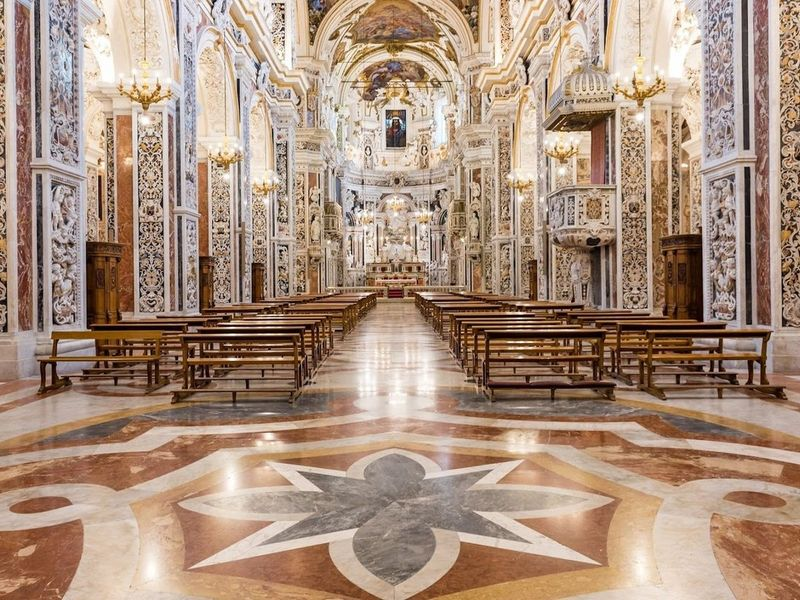
Church of Jesus of Casa Professa
Chiesa del Gesù di Casa Professa, also known as Church of St. Mary of Gesu, is a baroque-style church completed in the 1630s by the Jesuits in Palermo. The interior is adorned with intricate marble bas-reliefs and elaborate black, tangerine, and cream stone work. It's located near the lively Ballaro Market and is sometimes referred to as Casa Professa or mother house due to its significance to the Jesuits.
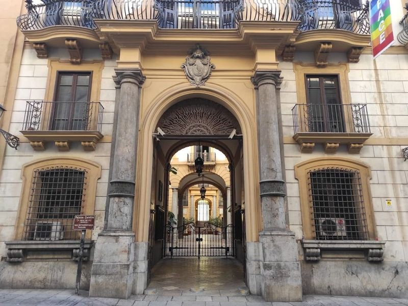
Palazzo Comitini
in the heart of Palermo, the Palazzo Comitini stands as a testament to Baroque architecture, captivating travellers with its grandeur. Located along the Via Maqueda, this historic site has witnessed centuries of transformation—from a hub for 19th-century bourgeoisie to a lively pedestrian zone filled with shops and eateries today.
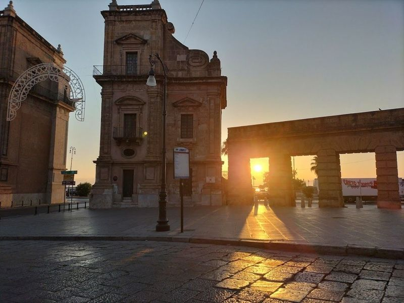
Porta Felice
Porta Felice is a historic monumental gate in Palermo, adorned with Renaissance and baroque architectural styles. It marks the beginning of Via Vittorio Emanuele, the oldest street in the city, connecting to notable landmarks such as Norman Palace and Piazza Vigliena. The gate was named after Donna Felice Orsini and was constructed under the Spanish Viceroy's mandate. While not a typical tourist destination, it serves as a picturesque passage towards the sea.
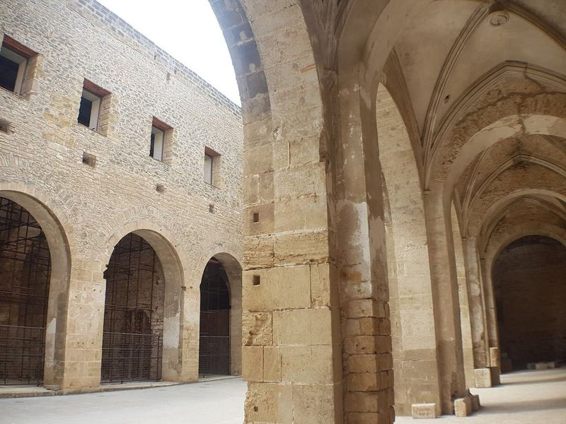
Santa Maria dello Spasimo
Santa Maria dello Spasimo is a unique church in the Kalsa district of Palermo, built in 1506 but never completed. The absence of its roof was not due to any catastrophe, but rather because the original project was too ambitious for the available resources and construction times. Today, this deconsecrated church hosts open-air theater performances, music events, and exhibitions.
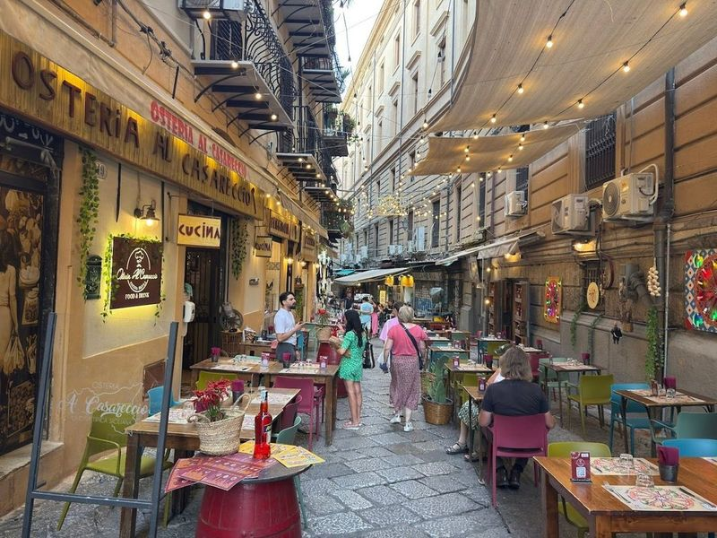
La Vucciria
Mercado de la Vucciria is a spot in Palermo, drawing a diverse crowd including hipsters, students, tourists, and locals. At night, Piazza Caracciolo transforms into a lively scene with street food vendors grilling meat and makeshift bars offering affordable shots while playing reggaeton music. It's an exciting place to experience the city's nightlife and local flavors.
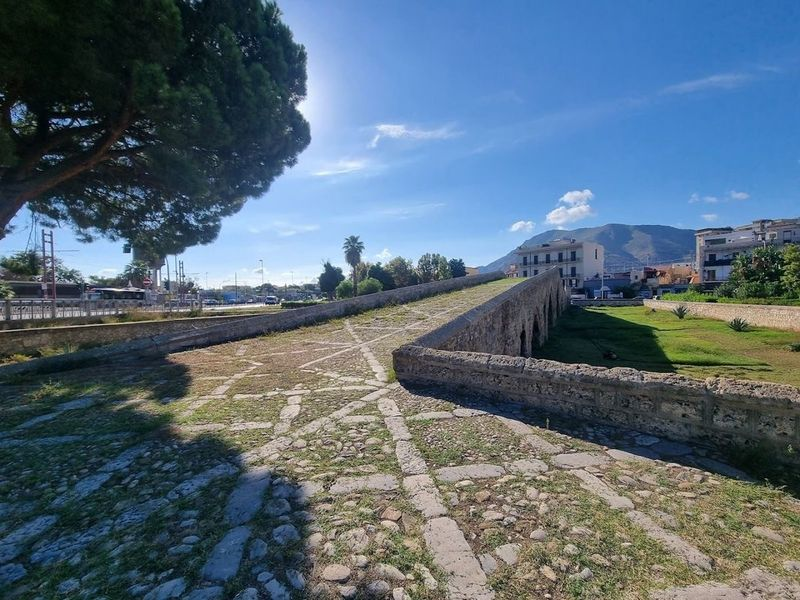
Ponte dell'Ammiraglio
Ponte dell'Ammiraglio, also known as the Admiral's Bridge, is a remarkable medieval engineering marvel from the era of Roger II. This historical bridge is located in a bustling square and is just a short walk from the central station. travellers can stroll across this unexpected gem and admire its UNESCO World Heritage status. It's definitely worth taking the time to visit this very cool and unique site.
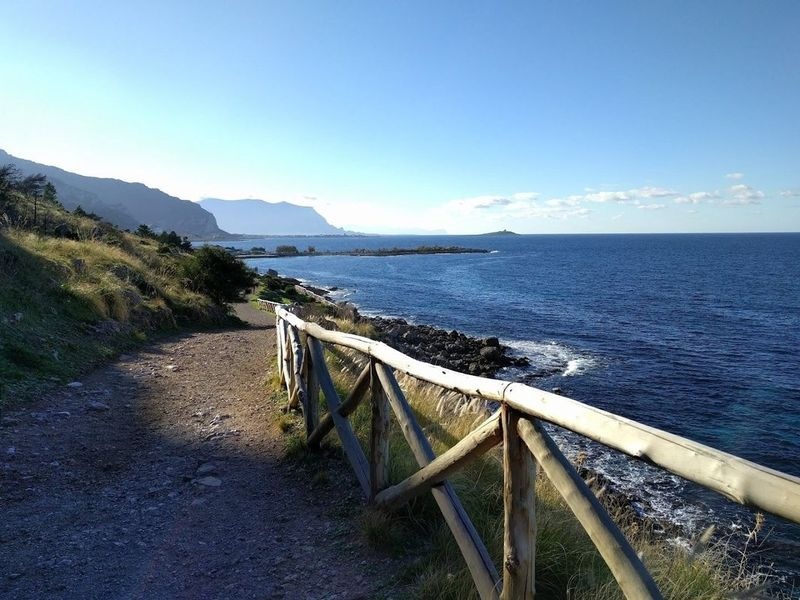
Riserva Naturale di Capo Gallo
Riserva Naturale di Capo Gallo is a rugged coastal nature reserve featuring steep cliffs, caves, and a habitat for various bird species like falcons, buzzards, and owls. The area is characterized by its pristine coastline and numerous caves, some of which hold significant archaeological finds and prehistoric wall art. The reserve also boasts the Capo Gallo beach where dwarf palms effortlessly grow amidst rocky formations.
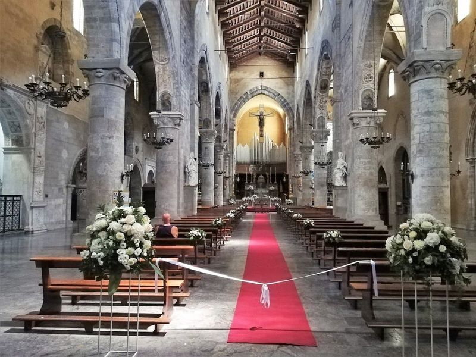
Basilica di San Francesco d'Assisi
The Basilica of St. Francis of Assisi is a church with excellent medieval architecture and culture. It features a rose window and bold Gothic portal, both of which are very distinctive markers. The interior is also very impressive with some original tombs still remaining. travellers are allowed to take non-commercial photos without flash, which makes this a great place to visit if 're interested in medieval culture or architecture.
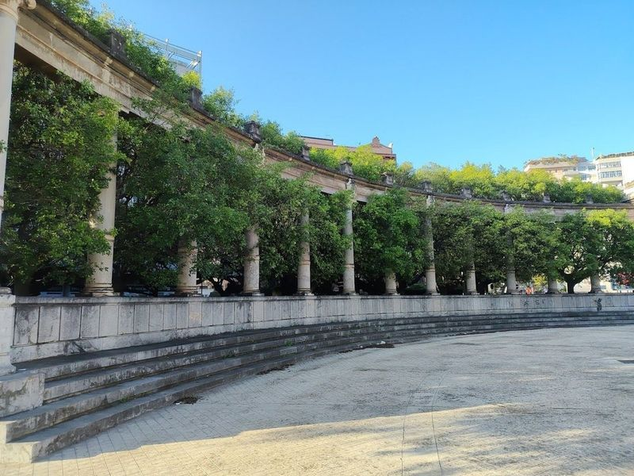
Statua della Libertà
When visiting Palermo, Sicily, make sure to include a visit to Statua della Libertà in itinerary. This monument is located in Piazza Vittorio Veneto and is dedicated to those who lost their lives in the first war. Surrounded by trees, the statue stands as a poignant reminder of history. While it may be a bit off the beaten path from other attractions, its unique and interesting design makes it worth the visit.
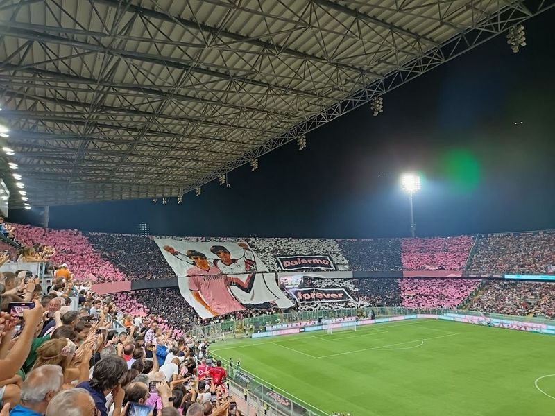
Renzo Barbera Stadium
in a serene location, the Renzo Barbera Stadium is conveniently situated between the beaches of Mondello and the city center of Palermo. This historic venue, originally built in the early 1930s and formerly known by several names, has hosted significant events like World Cup matches. With a capacity for 37,000 spectators, it offers an electric atmosphere that truly captures the spirit of Italian football.
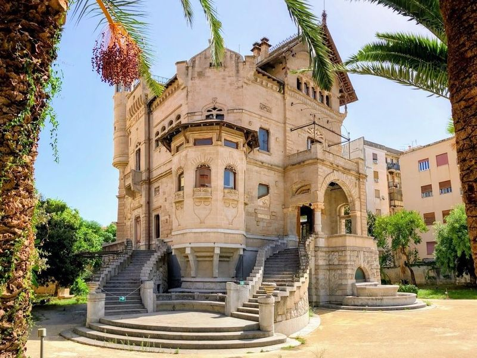
Villino Florio
Villino Florio is a 1900s villa in Palermo, designed by the renowned architect Ernesto Basile. The ornate wooden interiors have been meticulously restored after a fire, offering travellers a glimpse into the opulence of the era. This art-nouveau gem is located on Via Liberta, surrounded by other fascinating Liberty villas that showcase the city's architectural richness.
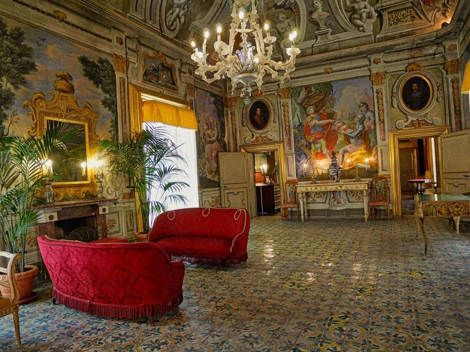
Villa Niscemi
The Villa Niscemi is a large and splendid 18th century building situated in the north-western part of Palermo. It is now owned by the City of Palermo and can be visited on Sundays. The villa has been the main residence of the noble Valguarnera family for about three centuries and retains many of its original furnishings, interior finishes and landscaping.